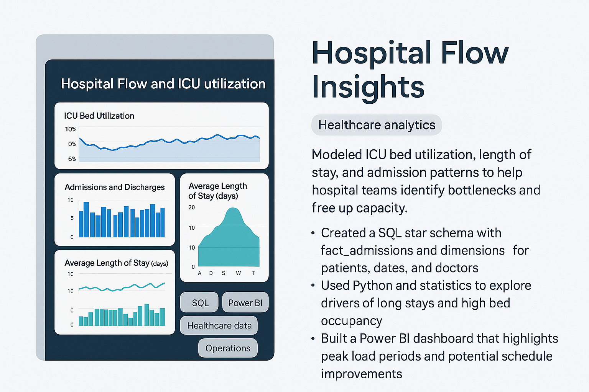

Hospital Flow Insights
Healthcare analyticsModeled ICU bed utilization, length of stay, and admission patterns to help hospital teams identify bottlenecks and free up capacity.
- Created a SQL star schema with fact_admissions and dimensions for patients, dates, and doctors.
- Used Python and statistics to explore drivers of long stays and high bed occupancy.
- Built a Power BI dashboard that highlights peak load periods and potential schedule improvements.
SQL
Power BI
Healthcare data
Operations